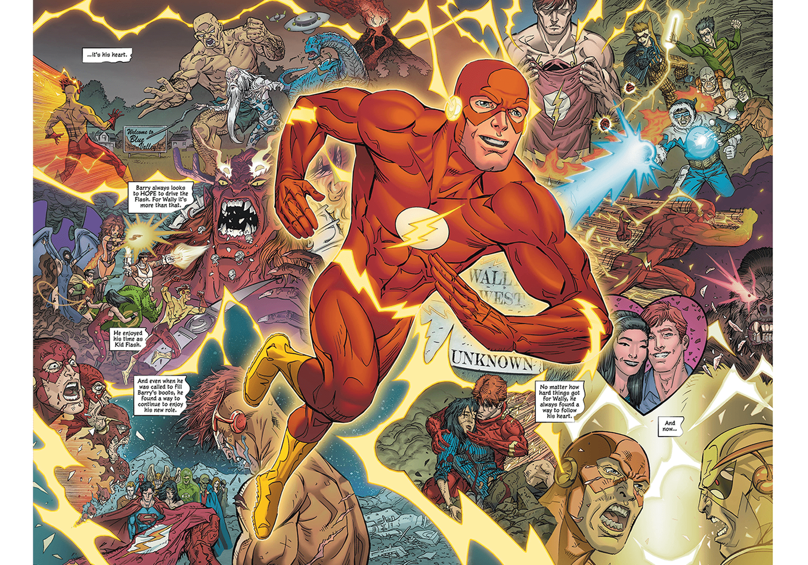

About Wally
Trained by the famed underground sprinting athlete, Barry Allen, Wally West surpassed his mentor by means of new - and illegal - performance enhancing drug regimens.
Wally reflecting on his races in the circus
Wally's Characteristics
- The secret to Wally's speed is Tren
- Wally credits his supreme fighting skills to Popeye
- He is often discriminated against for being a ginger
Wally Friends
Wally has many friends, some of whom are seeking to gain his title of fastest man alive. Click on the links below to read more about them: